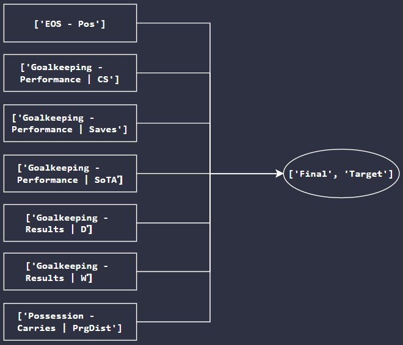

An overview of the model created for goalkeepers.
This model was built to act as an objective baseline for choosing goalkeepers to be included in the PFA TOTY. Details of the overall outlook of the model are provided below.
Algorithm chosen: Logistic Regression
Optimal number of features chosen: 7 (selected using a customized implementation of Recursive Feature Elimination)
Accordingly, the features selected for the goalkeeper model were as follows:

The interactive plot provided below showcases the results of Principal Component Analysis (3 components) implemented for the above 7 selected variables on data pertaining to the 4 most recent seasons (2017/18 to 2020/21). Each data point here represents a goalkeeper; points marked in green signify players included in the PFA TOTY while those marked in red signify players who were not.
The plot provided below showcases the results of Principal Component Analysis (3 components) implemented for the above 7 selected variables on all of the available seasons for goalkeepers, with information about model choices included. Here, nulls have been filled appropriately utilizing eXtreme Gradient Boosting. Each data point here too represents a goalkeeper. Points marked in green signify players included in both the actual PFA TOTY and the model's choices; those marked in yellow signify players who were included only in one of the aforementioned (either the PFA TOTY or the model's choices); points marked in red signify players who were included in neither the PFA TOTY nor the model's choices.
More information on the goalkeepers included in the PFA TOTY and those chosen by the model can be accessed by seasons under findings.